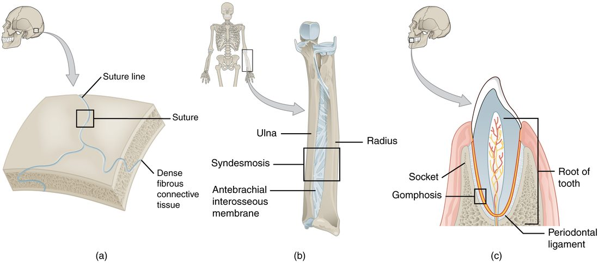
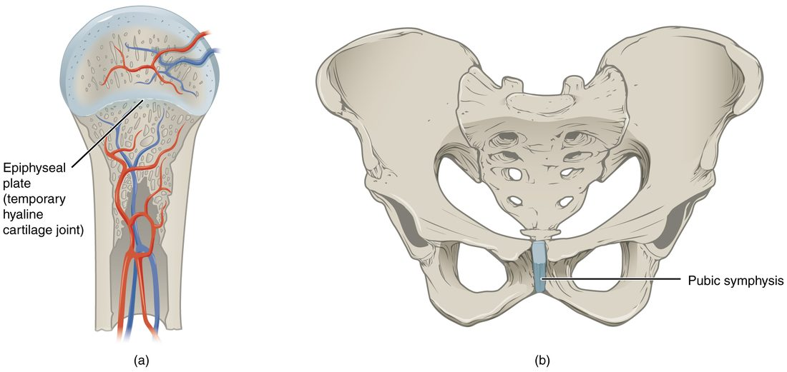

Press on the top of your head and nothing gives. Twist your forearm and the two forearm bones roll around each other. Swing your arm in a circle and it moves in almost any direction. All three are joints, yet they behave very differently. Joint classification sorts them in two ways: a structural classification (what holds the bones together) and a functional classification (how much the bones can move). This page teaches both, the subtypes of fibrous and cartilaginous joints, and how the two schemes line up.
What a joint is
A joint, or articulation (articul- = joint, -ation = the act of), is any place where a bone meets another bone, a cartilage, or a tooth. The word root arthr/o also means joint; you will see it in most joint names on this page.
Many people think a joint is a place where bones move. Most are. But the seams between your skull bones are joints too, and a healthy adult skull does not bend at them. What makes something a joint is only that two structures meet and are held together there.
Every joint has to balance two things:
- Mobility: how far the bones can move relative to each other.
- Stability: how well the joint resists being pulled apart or knocked out of line.
These pull against each other. The tighter the tissue that binds two bones, the less the bones can move and the harder the joint is to disrupt. Keep that trade-off in mind: it explains why each joint in the body is built the way it is.
Two ways to classify a joint
Anatomists classify joints in two independent ways.
- The structural classification asks what tissue joins the bones, and whether there is a space between them.
- The functional classification asks how much movement the joint allows.
Every joint gets one label from each scheme. The two usually agree in predictable ways, which is the point of learning both, but they are not the same thing. The table below the two sections shows how they line up.
Structural classes
There are three structural joint classes. Look at what sits between the bones.
- Fibrous joint: the bones are joined by dense connective tissue, mostly collagen fibers. There is no space between the bones.
- Cartilaginous joint: the bones are joined by cartilage, either hyaline cartilage or fibrocartilage. There is no space between the bones.
- Synovial joint (syn- = together, ov- = egg, for the egg-white look of the slippery fluid inside): no tissue bridges the gap between the bone ends. A narrow space filled with fluid separates them. A synovial membrane lines that space and makes the fluid, and a sleeve of dense connective tissue wraps around the whole joint.
The fluid-filled space is what sets synovial joints apart. Fibrous and cartilaginous joints are solid all the way across; a synovial joint has a gap the bones can glide across. The next topic takes a synovial joint apart layer by layer. This page covers the two solid kinds in detail.
Fibrous joints and their subtypes
Fibrous joints come in three subtypes. Figure 1 shows one of each.

Suture
A suture (sutura = seam) is a fibrous joint between the flat bones of the skull. You met the named sutures (coronal, sagittal, lambdoid and squamous) with the skull. The bone edges are wavy and interlock like the pieces of a jigsaw puzzle, and a thin layer of dense fibrous tissue fills the tiny gap between them. Interlocking edges plus short fibers leave almost no room to move.
In a newborn, the fibrous tissue is wide, and at the fontanelles it forms broad soft areas. That lets the skull bones shift and overlap slightly during birth and lets the skull grow with the brain. As you age, bone slowly grows across many sutures. When bone replaces the fibers completely and two bones fuse into one, the result is a synostosis (syn- = together, ost- = bone, -osis = condition). The two halves of the frontal bone, for example, usually fuse into one bone in early childhood.
Syndesmosis
A syndesmosis (syn- = together, desm- = band) is a fibrous joint where the bones are farther apart and are joined by a ligament or by a broad sheet of fibers. That sheet is an interosseous membrane (inter- = between, osse- = bone). Two examples:
- The interosseous membrane that runs along the length of the forearm between the radius and the ulna.
- The same arrangement in the leg, between the tibia and the fibula, plus the tough ligaments that bind the lower ends of those two bones together just above the ankle.
Because the fibers are longer than in a suture, a syndesmosis gives a little. The forearm membrane is flexible enough to let the radius roll around the ulna when you turn your palm up and down, while it still holds the two bones together along their length.
Gomphosis
A gomphosis (gomph- = bolt or peg) is the joint between a tooth and its bony socket in the jaw. The fibrous tissue here is the periodontal ligament (peri- = around, odont- = tooth): a thin layer of collagen fibers that runs from the tooth root to the socket wall. The fibers hold the tooth firmly but let it shift a fraction of a millimeter when you bite down, which cushions the jaw. Gomphoses are the only joints in your body where a tooth, not a bone or a cartilage, forms one side.
Cartilaginous joints and their subtypes
Cartilaginous joints come in two subtypes, named for the kind of cartilage that joins the bones. Figure 2 shows both.

Synchondrosis
A synchondrosis (syn- = together, chondr- = cartilage, -osis = condition) is a joint where the bones are joined by hyaline cartilage. Two examples:
- The epiphyseal plate of a growing long bone joins the epiphysis to the diaphysis. It is a temporary joint. When growth in length stops, bone replaces the cartilage, the plate becomes the epiphyseal line, and the synchondrosis has become a synostosis.
- The first rib and the sternum. The costal cartilage of the first rib joins it directly to the manubrium, and this joint stays cartilage for life. It barely moves. (The joints between the sternum and ribs 2 to 7 are built differently: each has a small fluid-filled space, so they are synovial joints.)
Symphysis
A symphysis (sym- = together, phys- = growth) is a joint where the bones are joined by a pad of fibrocartilage. Fibrocartilage is packed with thick collagen bundles, so it resists both squeezing and pulling, and it can bend a little. Examples:
- The pubic symphysis between the right and left pubic bones, at the front of the pelvis.
- Each intervertebral disc, which joins the bodies of two neighboring vertebrae. One disc allows only a little movement, but the small movements of many discs add up, which is why your whole spine can bend a long way.
- The joint between the manubrium and the body of the sternum, at the sternal angle.
A useful way to keep the two apart: a synchondrosis uses hyaline cartilage and usually barely moves; a symphysis uses the tougher fibrocartilage, gives a little, and always sits on the midline of the body.
Functional classes
The functional joint classes sort joints by how much movement they allow. All three names are built on arthr (joint) and -osis (condition).
- Synarthrosis (syn- = together): an immobile or nearly immobile joint. Examples: sutures, gomphoses, the epiphyseal plate, the first rib and sternum.
- Amphiarthrosis (amphi- = on both sides): a slightly movable joint. Examples: the pubic symphysis, the intervertebral discs, the syndesmoses of the forearm and leg.
- Diarthrosis (dia- = through, apart): a freely movable joint. Almost all synovial joints are diarthroses: the joints of your shoulder, fingers, knee and jaw.
Think of the three as points along a line from "locked" to "free" (Figure 3). As the connecting tissue gets longer, more flexible, or is replaced by a fluid-filled space, mobility rises and stability falls.
How the two schemes line up
Because the tissue between the bones sets how far they can move, the structural class predicts the functional class most of the time. The mapping is not perfect, so learn the exceptions too.
| Fibrous joints | Cartilaginous joints | Synovial joints | |
|---|---|---|---|
| What joins the bones | Dense connective tissue (collagen fibers) | Hyaline cartilage or fibrocartilage | A fibrous sleeve around the joint; the bone ends are separated by fluid |
| Space between the bones? | No | No | Yes, a narrow fluid-filled space |
| Subtypes | Suture, syndesmosis, gomphosis | Synchondrosis, symphysis | Six shapes (next topic) |
| Usual functional class | Synarthrosis (sutures, gomphoses); amphiarthrosis (syndesmoses) | Synarthrosis (synchondroses); amphiarthrosis (symphyses) | Diarthrosis |
| Example | Coronal suture; tooth in its socket | Epiphyseal plate; pubic symphysis | Shoulder; knuckles |
Two points trip students up.
- A structural class can span two functional classes. Fibrous joints include both immobile sutures and slightly movable syndesmoses. Cartilaginous joints include both nearly immobile synchondroses and slightly movable symphyses.
- Not every synovial joint is freely movable. A few synovial joints are held so tightly by surrounding ligaments that they move only slightly. The joint between the sacrum and each hip bone is the usual example: structurally synovial for much of its surface, functionally close to an amphiarthrosis.
Worked example: classify a joint in both schemes. You are shown a vertebral column and asked to classify the joint between the bodies of the fourth and fifth lumbar vertebrae.
- What joins the bones? A disc of fibrocartilage. There is no fluid-filled space between the bodies.
- Structural class: cartilage and no space, so a cartilaginous joint.
- Subtype: fibrocartilage pad, so a symphysis (not a synchondrosis, which uses hyaline cartilage).
- How much movement? A little: each disc squeezes and tilts slightly.
- Functional class: slightly movable, so an amphiarthrosis.
Answer: a cartilaginous joint (symphysis) that is functionally an amphiarthrosis. Work every joint in that order: tissue, space, structural class, subtype, then movement.
Structure sets function: the pubic symphysis in pregnancy
The pubic symphysis shows the rule in action. Normally the fibrocartilage pad and the ligaments over it hold the two pubic bones about 4 to 5 mm apart and let them shift only slightly.
During pregnancy, hormones loosen the collagen in the pad and its ligaments. The tissue stretches more under load, so the gap widens by a few millimeters and the bones shift more each time weight moves from one leg to the other. That extra give widens the birth canal slightly. In some people the gap widens more than usual, and the shearing of the joint surfaces causes sharp pain at the front of the pelvis with walking or climbing stairs. After delivery the tissue tightens again, and the gap usually returns to near normal within months.
The joint's class did not change: it is still a fibrocartilage symphysis. What changed is how stretchy its tissue is, and the amount of movement followed.
Summary
A joint, or articulation, is any place a bone meets another bone, a cartilage or a tooth. Structurally, fibrous joints join bones with dense connective tissue (sutures, syndesmoses with their ligaments or interosseous membranes, and gomphoses with the periodontal ligament), cartilaginous joints join them with cartilage (hyaline in a synchondrosis, fibrocartilage in a symphysis), and synovial joints separate the bone ends with a fluid-filled space. Functionally, a synarthrosis is immobile, an amphiarthrosis slightly movable and a diarthrosis freely movable. When bone replaces the tissue of a joint, the joint becomes a synostosis. More mobility always costs stability.